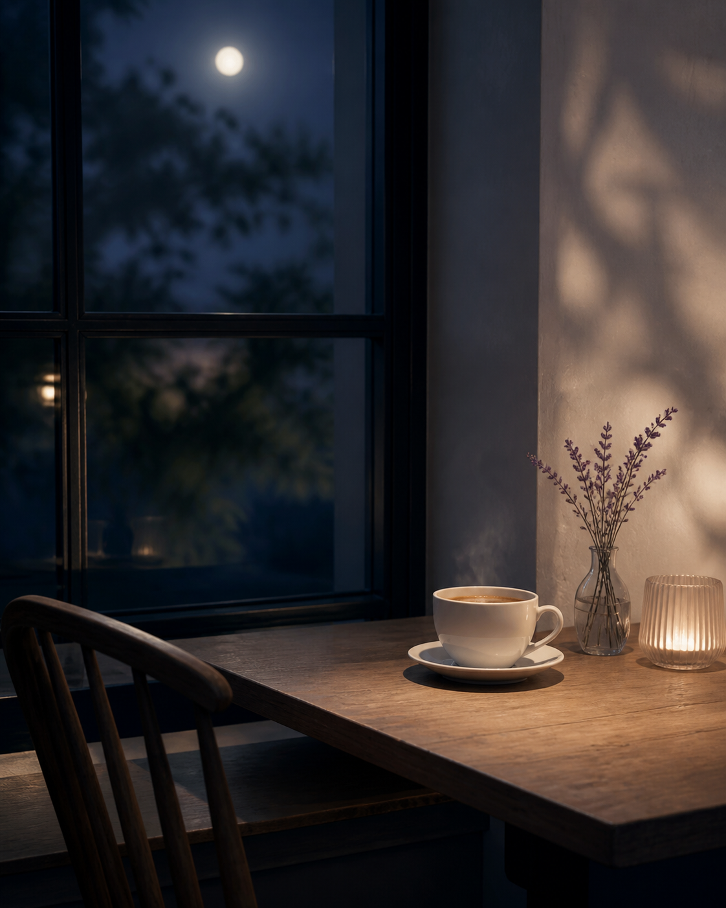
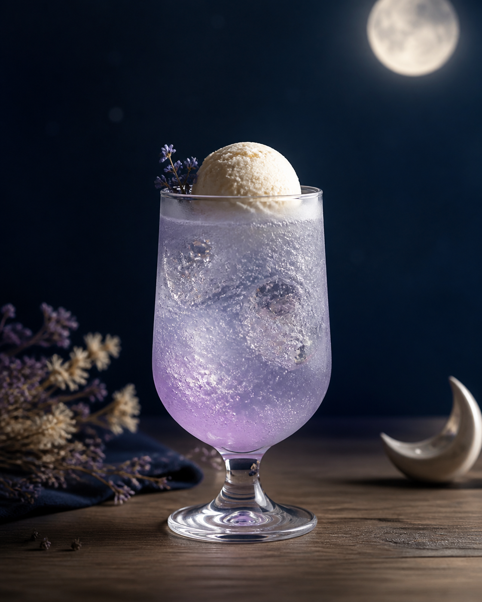
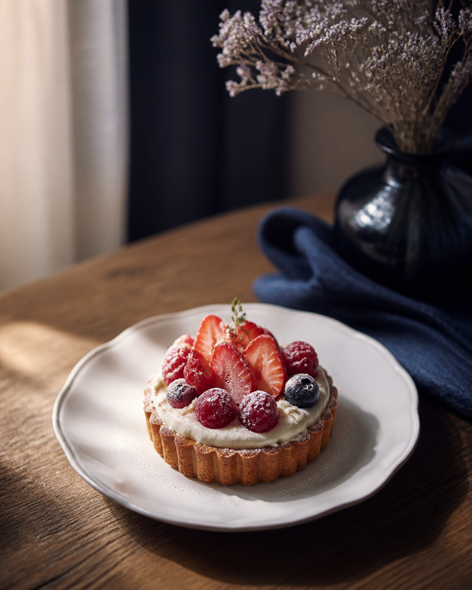
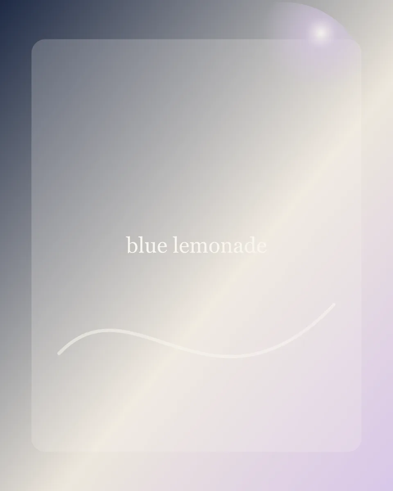
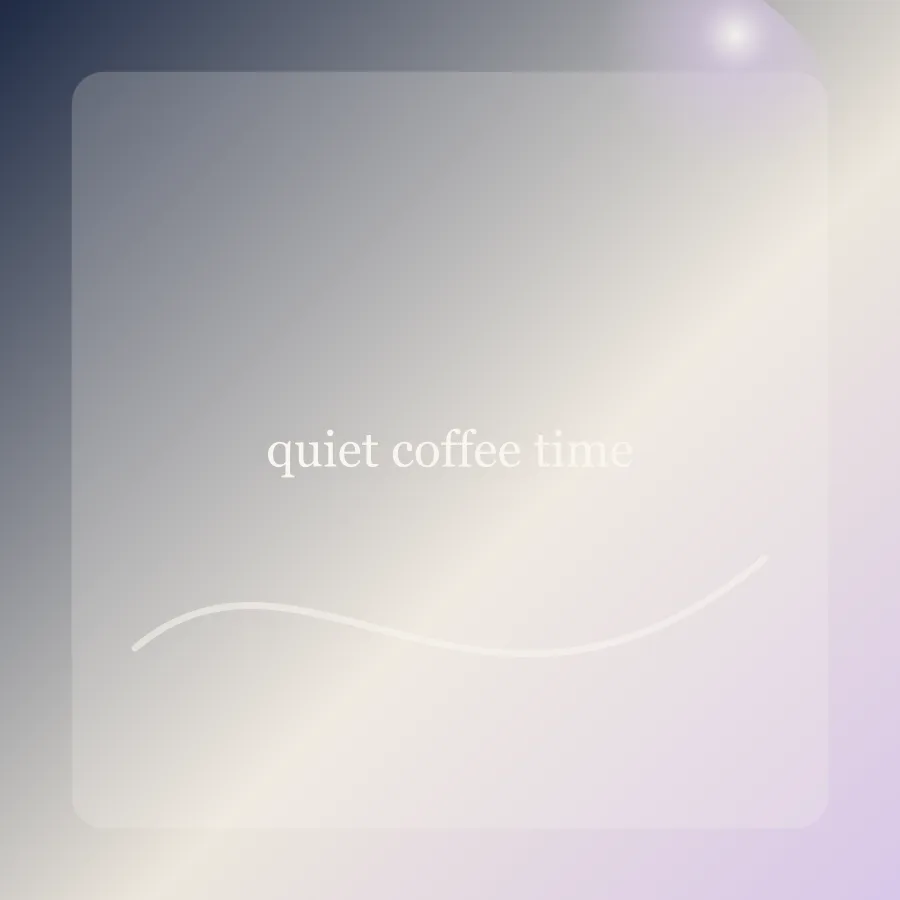
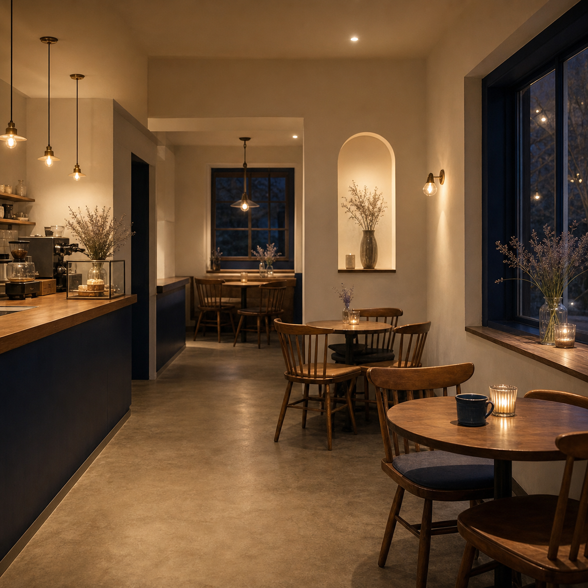
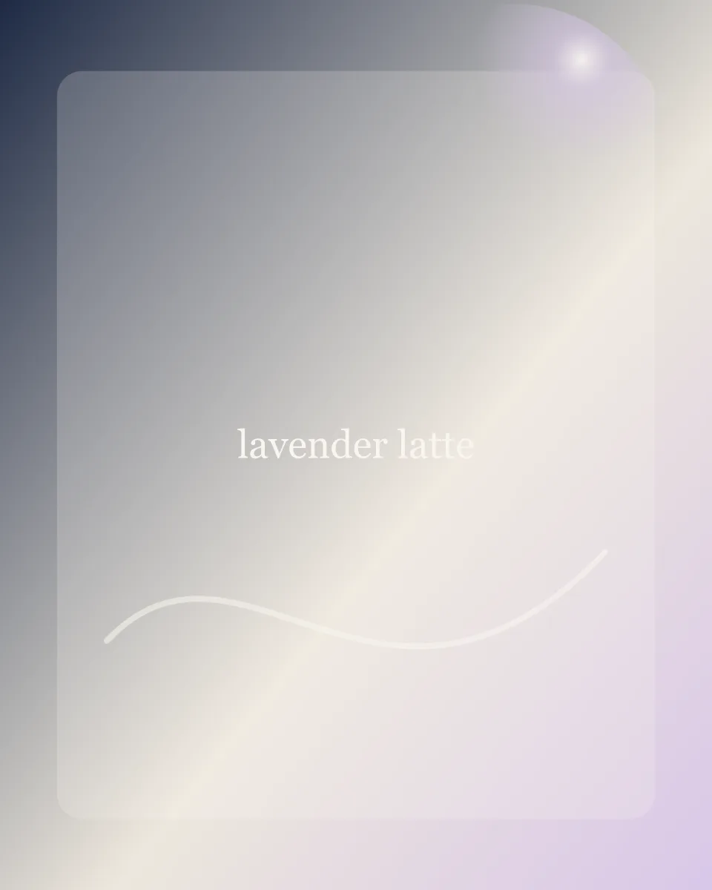

Lunéa Coffee
Concept
日常に、静かな余白を。
Lunéa Coffee は、忙しい毎日の中で少しだけ立ち止まれる小さなカフェです。
白と木のぬくもり、深いネイビーの静けさ、淡いラベンダーのやさしい彩り。一杯のコーヒーと焼き菓子が、慌ただしい日常をそっとほどいてくれます。
ひとりで過ごす午後にも、大切な人と過ごす時間にも。月明かりのように、静かに寄り添う場所でありたいと考えています。

Seasonal
季節にだけ出会える、淡いひとくち。
季節の空気に合わせて、見た目にもやさしい限定メニューをご用意しています。その時期だけの味わいをお楽しみください。

Limited
Moon Cream Soda
月明かりをイメージした、淡いラベンダーカラーのクリームソーダ。
¥760
Limited
Berry Mascarpone Tart
甘酸っぱいベリーとマスカルポーネを合わせた季節のタルト。
¥680
Limited
Night Blue Lemonade
夜空の青をイメージした、すっきり爽やかなレモネード。
¥700Gallery
静かな時間のかけら。
店内の空気感や、コーヒーを待つ時間。Lunéa Coffee で過ごす小さなひとときを写真でご紹介します。





Information
- Open
- 11:00 - 19:00
- Closed
- Wednesday
- Seats
- 12 seats
- Payment
- Cash / Credit Card / QR
- Takeout
- Drinks only
- Address
- 札幌市中央区南1条西◯丁目
席数の少ない小さなカフェのため、混雑時はお時間をいただく場合がございます。最新のお知らせは Instagram をご確認ください。
Access
静かな路地の、小さなカフェへ。
地下鉄大通駅から徒歩5分。街の賑わいから少し離れた、静かな路地に Lunéa Coffee はあります。
Lunéa Coffee札幌市中央区南1条西◯丁目
地下鉄大通駅から徒歩5分
Lunéa Coffee
Follow us
最新情報は Instagram で。
季節限定メニューや営業日のお知らせは、Instagram で更新しています。Lunéa Coffee の静かな日常を、ぜひ覗いてみてください。
Instagram はポートフォリオ用の Sample 表示です。